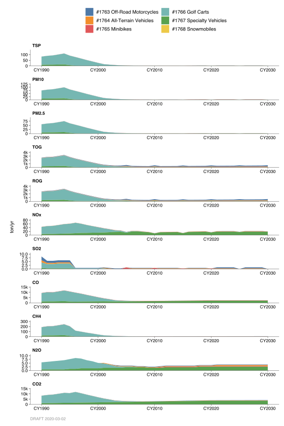
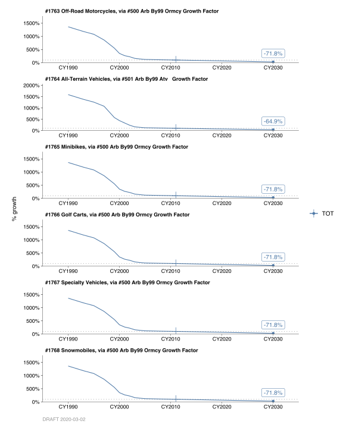

2.6 Off Road Motorcycles & All Terrain Vehicles
2.6.1 Emissions
Introduction
These categories are used to inventory the emissions from off-road motorcycles and all- terrain vehicles (ATV).
Methodologies
California Air Research Board (CARB) developed an off-road vehicle emission inventory (OFFROAD2007) model to estimate emissions from off-road motor vehicles for all counties and air basins in California. The OFFROAD model contains a comprehensive list of equipment from a wider range of categories. The criteria and GHG emissions for off-road motorcycles and all-terrain vehicles in the Bay Area were obtained from the CARB’s OFFROAD2007 model. Most of the annual activity takes place in spring, summer and fall. Weekend activity is about twice as high as weekdays.
2.6.2 Trends
History

Growth

Estimates for past and future year emissions were also taken from the OFFROAD2007 model. These data are based on Motorcycle Industry Council Reports on motorcycles and ATV sales that are published annually.
Control
Emissions include expected benefits from ARB’s Re-Formulated Gasoline Phase I and Phase II (1992 and 1996 respectively) and Off-Road Recreational Vehicles Regulations beginning 1997. Control factors developed by ARB were used for projecting emissions.
Annual average emissions for these categories are shown in the next page.
By: Amir Fanai/Michael Nguyen Date: February, 2014 Base Year 2011